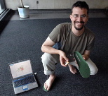
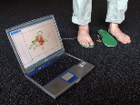

Balance problems? Step into the iShoeMIT grad student's invention could one day prevent fallsYour grandmother might have little in common with an astronaut, but both could benefit from a new device an MIT graduate student is designing to test balancing ability. The iShoe insole could help doctors detect balance problems before a catastrophic fall occurs, says Erez Lieberman, a graduate student in the Harvard-MIT Division of Health Sciences and Technology who developed the technology as an intern at NASA. Falls among the elderly are common and can be deadly: In 2005, nearly 300,000 Americans suffered hip fractures after a fall, and an average of 24 percent of hip-fracture patients aged 50 and over die in the year following their fracture, according to the National Osteoporosis Foundation. Lieberman is now testing the iShoe technology in a small group of patients. The current model is equipped to diagnose balance problems, but future versions could help correct such problems, by providing sensory stimulation to the feet when the wearer is off-kilter. "By doing that we can replace the sense and thus improve people's balance," Lieberman says. Lieberman and other iShoe team members have applied for a patent on the technology, to be jointly held by MIT, Harvard and NASA. In April, the company won a $50,000 grant from the Lunar Ventures Competition to help with start-up costs. Lieberman originally developed the technology to help NASA monitor balance problems in astronauts returning from space. Zero gravity environments wreak havoc on the vestibular system, one of three body systems that control balance. (The others are vision and sensory receptors called proprioceptors, which tell you where your body parts are in relation to other body parts and the outside world.) "The change in gravity really screws with their sense of balance. They're falling all over the place," says Lieberman, who is a Hertz Fellow and also receives funding from the National Science Foundation and Department of Defense. The effect usually lasts about 10 days, but NASA tests astronauts' balance for 16 days after their return. Astronauts go into a phone-booth-like box, where they undergo a series of balance tests such as platform shifts and wall shifts. While at NASA, Lieberman developed a new system for gathering data and an algorithm to analyze the data. "We've developed the first algorithm that is really capable of not just looking at the pressure distribution of proprioceptors on the feet but also analyzing what that's saying," he says. Lieberman soon realized that the technology could reach a wider audience than just astronauts. His own grandmother suffered a bad fall several years ago, and he theorized that a balance diagnostic could help doctors catch balance problems before such a fall occurs. "You have a gradual progression of loss of balance, osteoporosis, and other factors that can lead to the fall," Lieberman says. The iShoe insole would measure and analyze the pressure distribution of the patient's foot and report back to their doctor. The device could also be outfitted with an alarm that would alert family members when a fall has occurred. Lieberman and his colleagues are now testing the device in about 60 people, hoping to generate data that will help them create a model to predict the risk of a fall. Other members of the iShoe team are Katherine Forth, a former NASA postdoctoral associate; Ricardo Piedrahita, a graduate of University of California at San Diego; and Qian Yang, a Harvard undergraduate. |

Photo / Donna Coveney
Graduate student Erez Lieberman is working on an "iShoe" which uses technology developed by NASA to create an insole that could help elderly people keep their balance and prevent falls.
Enlarge image

Photo / Donna Coveney
The iShoe insole would measure and analyze the pressure distribution of the patient's foot and report back to their doctor.
Enlarge image
TOOLSCONTACTTeresa Herbert RELATEDMore: Health sciences and technology More: Innovation and inventions |